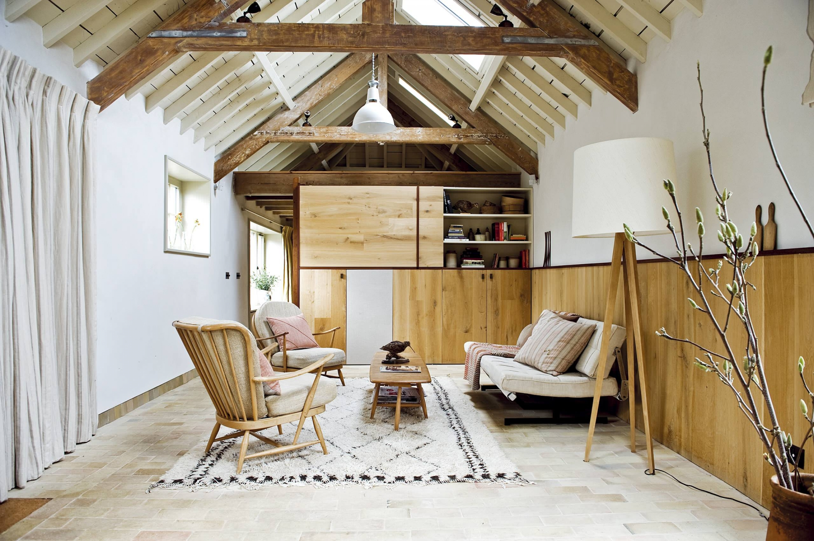
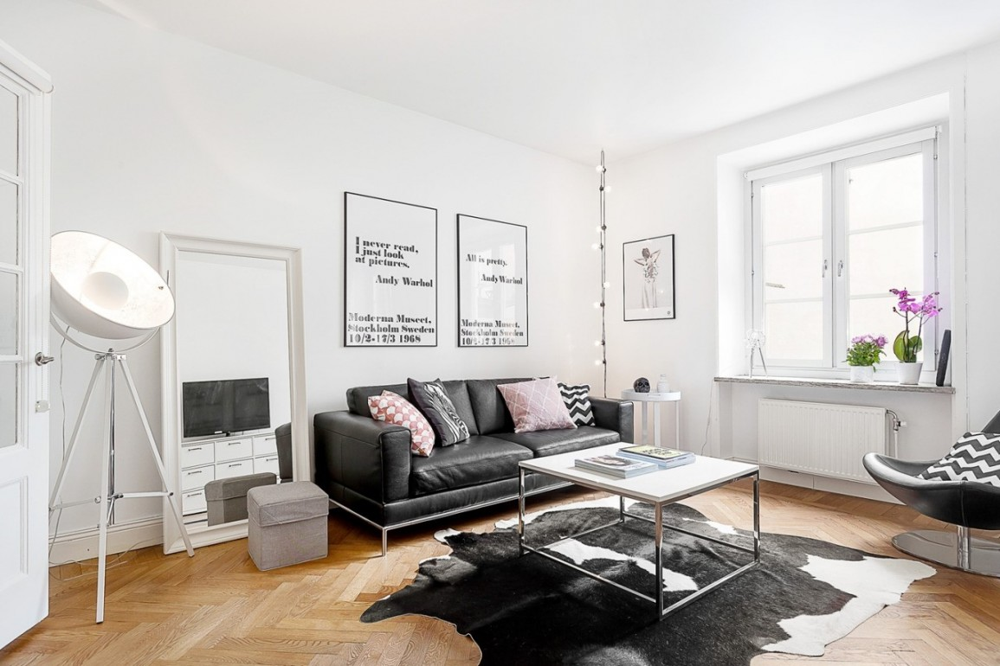
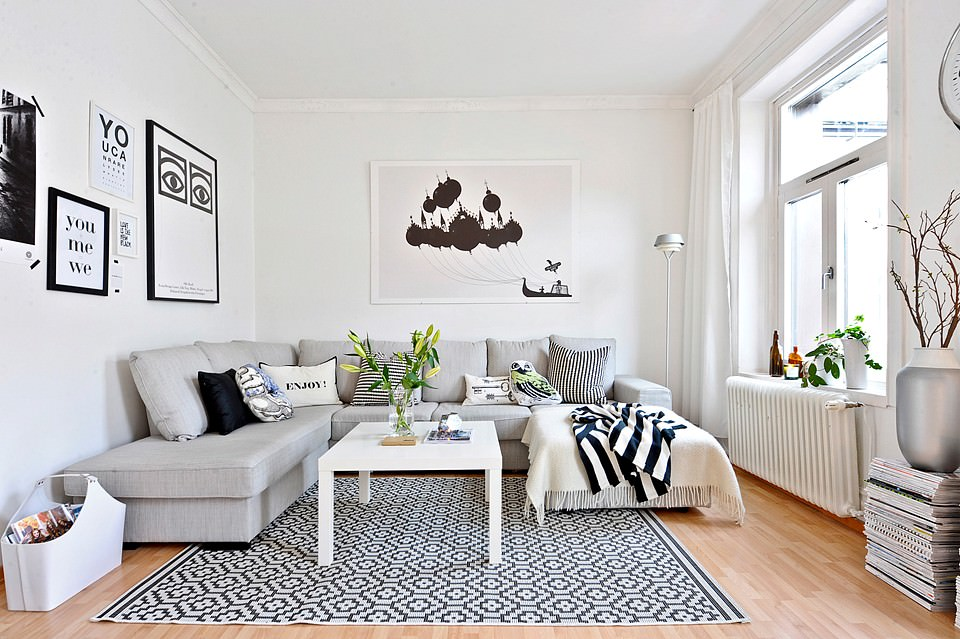

Scandinavian furniture is practical and functional. Nothing extra, there should be a maximum of free space. Most often, the furniture is made from light-colored trees (beech, birch, sometimes pine, spruce). For upholstery you can use textiles, suede, leather, cotton, linen.
   n e x t